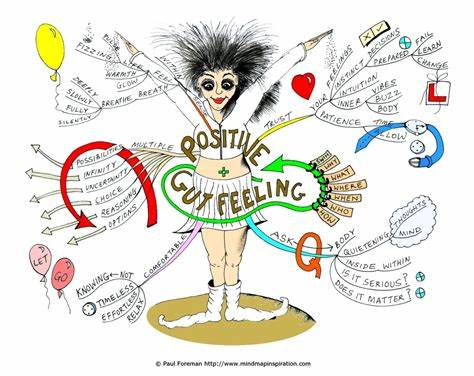
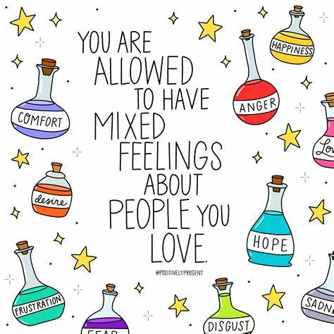
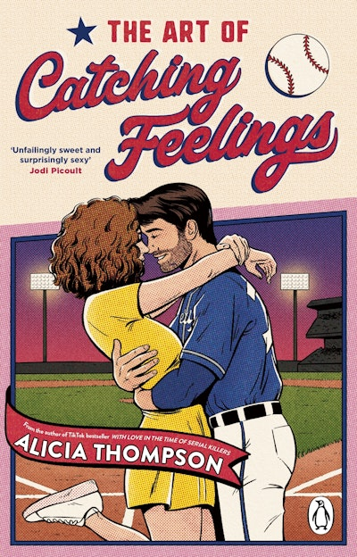

Feeling in Everyday Language
Explore common expressions that capture the essence of feelings.
"I have a gut feeling about this."
This expression refers to a strong intuition or instinct about something.
"Mixed feelings."
This phrase describes being conflicted or having opposing emotions about something.
"Catch feelings."
To develop romantic feelings for someone, often unexpectedly.
Linguistic Curiosities About "Feeling"
Uncover interesting facts about the word "feeling" in an interactive way.
The word "feeling" originates from the Old English word "fēlan," which means to perceive by touch or sensation. Over time, it evolved to encompass emotional and intuitive experiences.
"Feeling" shares linguistic roots with the German word "fühlen" and Dutch "voelen," which also mean to sense or perceive.
Originally focused on physical sensations, "feeling" began to include emotional states in Middle English, reflecting the human capacity for empathy and introspection.